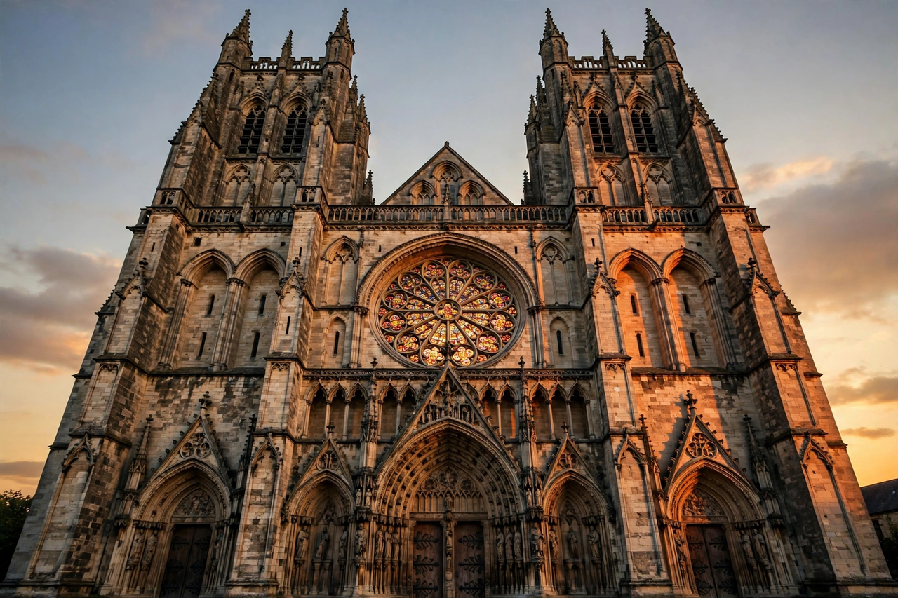

Category: Architecture
This Commons category collects media about architecture and buildings: churches and cathedrals, castles, houses, bridges, towers, interiors, architectural styles from Gothic and Baroque to Modernism, and buildings by country and architect.

[Image: A Gothic cathedral facade in warm evening light]
Subcategories
Architecture by country, by style, by material and by building type are the main branches, with many Featured Images of landmark buildings.